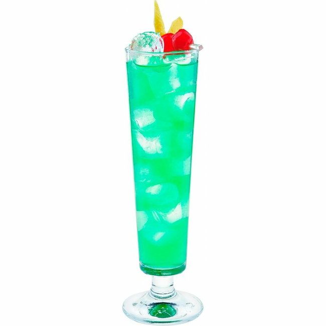

| ГЛАВНАЯ | Маргарита | Голубая лагуна | Том Коллинз | Пина Колада | Текила Санрайз |
|  |
Способ приготовления:
|
«Зелёной феей» или «ведьмой» ещё в XIX веке называли крепкое спиртное на травах абсент, имеющее соответствующую окраску, благодаря содержанию хлорофилла в напитке. Эссенция полыни, являющейся одним из основных ингредиентов абсента, включает токсичное вещество туйон. Ему приписывают способность вызывать эйфорию и галлюцинации, чем обусловлено мистическое название напитка.
Абсент — очень популярный среди многих творческих личностей напиток, был запрещён большую часть XX-го века. А количество токсичного туйона в составе его современных вариантов строго контролируется. В наше время Зелёной феей также называют коктейль, чей рецепт включает абсент. Достоверные сведения о том, кем и когда был изобретён коктейль «Зелёная фея», у историков отсутствуют.
Считается, что он был назван так из-за своей выделяющейся изумрудной окраски, являющейся результатом смешения абсента с ликёрами дынным и синим Blue Curacao. Согласно поверьям барменов о коктейле Green Fairy, он способен выполнить желание, которое сбудется через месяц, если загадать его перед первым глотком этого алкоголя. По другим слухам данный напиток способствует творчеству и воображению.
Судя по отзывам опробовавших коктейль, он обеспечивает подъём настроения и бодрость в течение целой ночи, однако его нежелательно потреблять неумеренно из-за наличия одного и более видов крепкого спиртного среди ингредиентов рецептов «Зелёной феи».
К рецепту